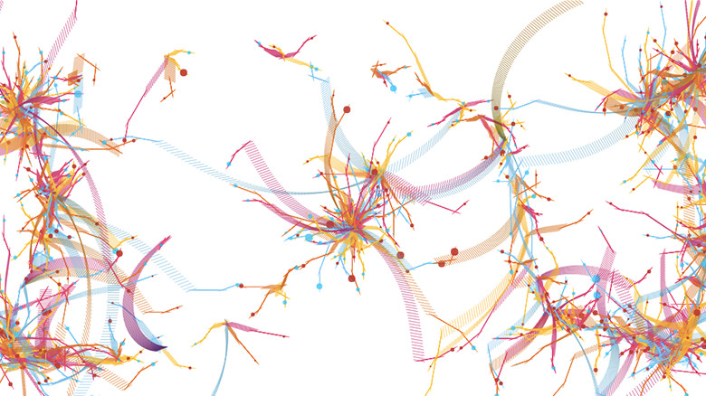

digital

Marius Watz
http://mariuswatz.com/works/abstract01js/-どんな人
今までずっとアナログな作品が多かったので、インタラクティブな作品を紹介します。MariusWatzはプログラミングの規則性から生み出される複雑な模様の作品を多くつくっています。通常の創作活動では、アーティストは完成形を先に決めてから制作に取り掛かりますが、Watzはおおまかな構造をプログラミングで決めて、作品の要素となる形や色のパラメータを関数に導入することで、人の力では予測不可能な表現をつくり出します。
-解説
画面をクリックすると、赤、黄色、青の様々な線が弧を描いて飛び出します。線が一定の長さまで伸びると小さな円が発生し、まるで鮮やかな植物が咲くような動きを見せます。ドラックして見たり、一点をずっと押し続けて見たり、いろんな場所をクリックしたりすることで、様々な変化を楽しむことができます。また、誰でも綺麗な模様を描けるのもこの作品の良い点です。一つの完成系を作っていくのではなく、形が発生していく「仕組み」自体を作っているのはこの作品以外にも多くあり、「ジェネラティブアート」(または、ジェネラティブデザイン)と呼ばれています。
-好きなところ
形が作られる仕組み自体を作るアプローチは自分では思いつかなかったビジュアルなどを作ることができる良い方法だと思います。ざっくりおおまかなビジュアルだけ決めて、あとはコンピュータにしてもらうというのも一つの手法としてありなのではないでしょうか。